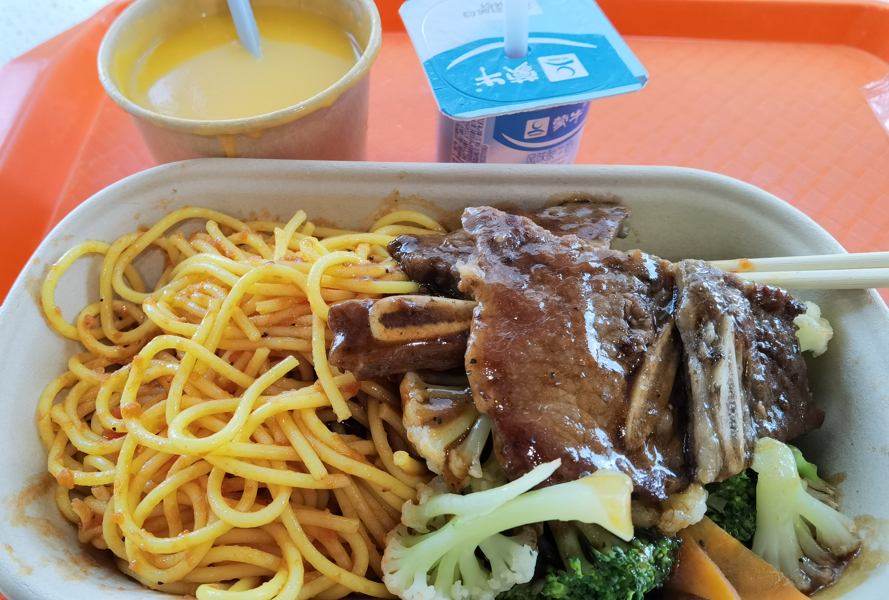

Burnout in Dachang - ex-interns' POVs on the Chinese Big Techs
“Da Chang”, a Chinese word meaning “big factory”, usually refers to China’s most well-known tech giants, including ByteDance, Alibaba, Tencent, Pinduoduo, NetEase, etc.
You might not be familiar with these companies, but you must know Tik Tok, Taobao, and WeChat, the applications used by billions of people around the world. These internet Giants have profoundly reshaped the Chinese people’s everyday life on the internet, from online shopping to entertainment, from daily communication to mobile payment.
In past decades, the dramatically increasing net worth of these China’s internet companies has made them one of the most highly-valued companies in the world.
The internet giants provide many jobs in China as well as internship opportunities. In 2021, over 8000 intern jobs were provided by Tencent, an increase of 228% more jobs compared to last year.
“I feel like I am a tiny piece of wood in a huge fireplace. Everyday I keep this fire burning with my past experience and knowledge, but I’m not learning anything new. If I stay in Da Chang, I know sooner or later I will be used up. ”
—  Joy Su
Joy Su
It seems exciting to be a part of a giant technology company that influences our everyday lives, but discussion about whether it is a good choice to work in Da Chang has become a controversial topic in recent years.
Despite the popularity of Da Chang working opportunities, some said their work in these companies fails to meet their expectations. Joy Su, a former intern of Tencent Beijing, said the long working hours and repetitive work in Da Chang disappointed her. “I feel like I am a tiny piece of wood in a huge fireplace. Everyday I keep this fire burning with my past experience and knowledge, but I’m not learning anything new. If I stay in Da Chang, I know sooner or later I will be used up.” said Joy Su.
Popular "Da Chang"
“To get this internship, I filled out pages of application form, passed one written exam, and had three rounds of interviews. ”
— Sophia Sheng
“To get this internship, I filled out pages of application form, passed one written exam, and had three rounds of interviews,” Said Sophia Sheng, a former ByteDance Beijing intern, “There were two other interns in our department. We all found applying for an internship in Da Chang was quite competitive. ”
Though competitive, Da Chang provides a relatively high salary for interns compared to other companies. “My intern salary at ByteDance was 150 RMB per day, plus 1500 RMB housing allowance every month, and the company also provides free breakfast and dinner,” said Sophia Sheng.

Free meals from ByteDance Beijing
Ray, a full-time programmer from Tencent Xi'an, told us that interns in his group usually get 200 to 300 RMB per day.
Data from the 2020 Chinese university graduate employability report shows that remuneration is the biggest concern for over 60% of the survey participants.
According to this survey with more than 700 samples, the median salary of interns at internet companies falls into the interval of 2k to 3k RMB per month. The report also shows that most interns from these internet companies have an above-average salary from their internships, thus making jobs in big tech companies attractive among the newly graduates.
The working environment of big tech companies is another advantage to the appliers. According to a graduation report in 2018, many graduates from the top universities in China chose to work for the 5 top internet companies. To work with the outstandings has already been an attraction point itself.
With a wide platform, big tech companies have the resources to offer many chances for their employees to improve themselves. In Ray’s company Tencent, it’s common that employees who want to learn more can attend lectures held by elites in the industry.
Besides all the realistic advantages of big tech companies, their big name is also a crucial element that attracts new graduates. “Many interns think that working in a big tech company is something remarkable, and they want their families to be proud of them,” Ray said.
Mr. Li, an Hong Kong Baptist University undergraduate student, currently an intern programmer at NetEase Beijing said he felt pretty comfortable about his internship. When Li first got the internship offer, he had no idea that he would receive so many rewards from this job. With the mature training system in NetEase, this internship had opened a brand new horizon of software development methods and knowledge for Li.
“The software development at NetEase has its very unique process, every task needs detailed research before one gets hands on it, and they have a very mature system of work distribution between each group, not to mention the advanced developing techniques these full-time employees have,” said Li.
Although Li has only started his job for 3 months, he has gained knowledge about internet technology far beyond his expectation, of which, “one can never learn from school lectures”, as Li said.
The Downside of Working in Da Chang
However, not everyone found the work they look forward to from their “Da Chang” experience.
“The working experience in Huawei was a nightmare: the working hours there are only to ‘spring’ for longer but never shorter, and one only needs to do exactly what the boss told you. “ said Ray, who once was a full-time programmer in Huawei Xi’an one and half a year ago.
“Do not expect anything from your company, then everything will be a surprise. ”
—  Ray
Ray
According to Ray, working in Huawei was extremely rigid and inflexible, just like working in a factory: As a programmer, one only needs to understand the working module he or she is in charge of but nothing more. It seems like the employees at “Da Chang” are only small parts used to keep the big machine running.
In Ray’s mind, doing these thoughtless and boring works at Huawei can never improve one’s working skills and knowledge of the industry. Instead, people in “Da Chang” have the tendency to assimilate to this heavily routined living style after years of working and lose their innovation and passion.
When being asked about her thoughts on her past life in Huawei, Ray said: “Do not expect anything from your company, then everything will be a surprise.”
All work and no play?
According to Article 36 in the Labour Law of mainland China, workers shall work for no more than 8 hours a day and no more than 44 hours a week on average.
Yet, China’s tech industry is known for excessively long working hours, usually referring to the “996” work culture, in which the “Da Chang” are bulldozing their employees to work 6 days a week, and 12 hours a day from 9 am to 9 pm.
In March 2019, some programmers behind a Github user “996icu” embarked on a campaign named “Worker Lives Matter” and aired their grievances about working conditions through a code-sharing Github site.
As per Reuters, the campaign collected data shared by over 4,000 employees of companies such as Baidu, Tencent, and Alibaba and showed that many of them work approximately 12 hours per day. 996ICU, the campaign's webpage was soon blocked on multiple platforms including the Tencent-owned messaging tools QQ and WeChat, Baidu, and the UC Browser.
Later in April, Alibaba’s founder Jack Ma Yun responded to the public criticism about “996” on a Weibo post, saying that the “996” schedule is a “huge blessing”, adding that any employees of Alibaba should be prepared to work 12 hours a day if they want to succeed.
“The real 996 is not simply overtime work," said Ma in another meeting with the employees, and claimed that those who work shorter hours "won't taste the happiness and rewards of hard work."
Richard Liu Qiangdong, founder of Alibaba’s rival JD.com was also reported to criticise employees who did not work hard enough as “slackers”. He once said in an article on WeChat that his company did not force employees to work in the “996” schedule, but encouraged every worker in JD.com to strive for excellence in work.
Liu also claimed that he can work according to the schedule of “8116+8”, which means working from 8 am to 11 pm on weekdays and Saturdays, and working 8 hours on Sundays.
However, the notorious "996 working culture" -- that the Dachangs encourage employees into working from 9 am to 9 pm, six days a week -- does not deter the undergraduates from fighting for a seat in the tech giants.
When Joy Su entered the last round of interviews to get into Tencent, she was asked by the Human Resources officer if she could work overtime occasionally.
"If the department demands the workers to work overtime excessively, the company will state in the job requirements like 'willing to work overtime' or phrased as 'has a certain level of stress tolerance','" said Su based on her own observation.
Of the 51 positions in Tencent welcoming mainland graduates to apply, 12 or 23% of them have stated requirements like "has strong stress tolerance", "can endure hardship". Of the 63 intern positions available for mainland undergraduates, 16 or 25% of them also have similar job requirements.
“I feel like the working environment in Da Chang is encouraging the employers to work overtime,” said Sophia Sheng. ByteDance would provide free breakfast around 9 am, and the dinner will be free after 7 pm. The company would also cover the taxi fee after 10 pm. “Technically we could go home at 6:30 pm, but usually my colleagues would stay late, finish dinner at around 8 pm, work for another hour, and go home around 9 pm.”
Joy Su, said she was not required to stay overtime when she worked for Tencent, but there was an ‘invisible’ extra work for everyone at the weekend. “There is a working report we have to submit every week, but we can only write the report on weekends, because the data we need to use in the report is sent to us at the end of every Friday,” said Joy, “For the three months in Tencent, I didn’t really enjoy my weekends. I worked every Saturday on the report.”
Young people desire Da Chang, as Da Chang desires them
Although big tech company’s strict working requirements and highly pressured working environment are widely known among Chinese society, there are still many newcomers to internet technology eager to take the job.
According to a survey focusing on university students’ internship experience in big tech companies conducted by postgraduates from Peking University HSBC Business School, more than 70% of respondents would like to consider a future job in an internet giant.
Gina Chen, a second-year postgraduate student from the Department of Computer Science and Technology at Nanjing University, said she has been preparing for the coming internship interviews in big tech companies for one month. Last year, she failed to find a satisfying summer internship in an internet giant, but she still hopes to try again. “The big tech giant means a larger pool of talents and more professional opportunities,” Gina said.
“It is common that advanced industries have the trend of growing younger and younger, and it is especially true for internet technology. ”
—  Selena Mo
Selena Mo
Not only do the graduates nowadays have the wish to work for big tech companies, but the companies themselves are also looking for younger blood to become more competitive in the industry.
“It is common that advanced industries have the trend of growing younger and younger, and it is especially true for internet technology.” Said Selena Mo, an HR of Tencent Tianjin’s Platform and Content Group.
In a specific group running content verification for Wesee in Tencent Tianjin, more than half of the total employees are interns.
According to Selena, many internet companies need younger employees who can understand the thoughts and needs of the younger generations, who have constituted the vast majority of the user groups.
“Take Tencent’s short video product Wesee as an example, in the last few years they had met several problems during the competition with Bytedance’s TikTok. Tencent will need more employees from the younger generation to find out what interests the users nowadays,” said Selena.
Work-life balance is not of the utmost priority for undergraduates nowadays when looking for their first job, as revealed in the 2020 Chinese University Graduate Employability Report. But both Sophia Sheng and Joy Su said they would not consider working for internet giants companies in the future unless there is no other better choice.
“The internet company jobs were all about user growth. People work day and night in these companies, just to make that number larger,” said Joy Su, “I feel like that in this process, no problems will be solved, and nothing valuable will be created.”
Sophia Sheng said interest will be the top priority of her future job. “I want to wake up every day doing the work that I’m truly interested in.” Said Sophia Sheng.
Unlike the mainland tech companies who are glorifying the “996” work culture, their counterparts overseas are moving forward to a flexible working arrangement while workers maintain, or even improve their productivity in the workplace.
One-third of the tech workers in the United States admitted in a Blind’s survey that they only work 3 to 4 hours when working remotely during the Covid-19 outbreak. A professional at Amazon shared with the job-seeking platform: “Last year, I went through a period of 12 to 14 hours days, 65 to 70 hours weeks. Now I only work 44 to 48 hours a week. I’m more focused, more productive, and happier.”
China’s authorities have also issued a warning to the tech companies that punishing work culture is illegal in late August this year. The state’s top court and labour ministry published a joint statement detailing 10 court decisions related to labour disputes, many involving workers being forced to work overtime.
That signaled the tech giants to step on the brakes. Tencent and in November were reported to shorten the working schedule from “996” to “965” — working from 9 am to 6 pm, and 5 days a week.